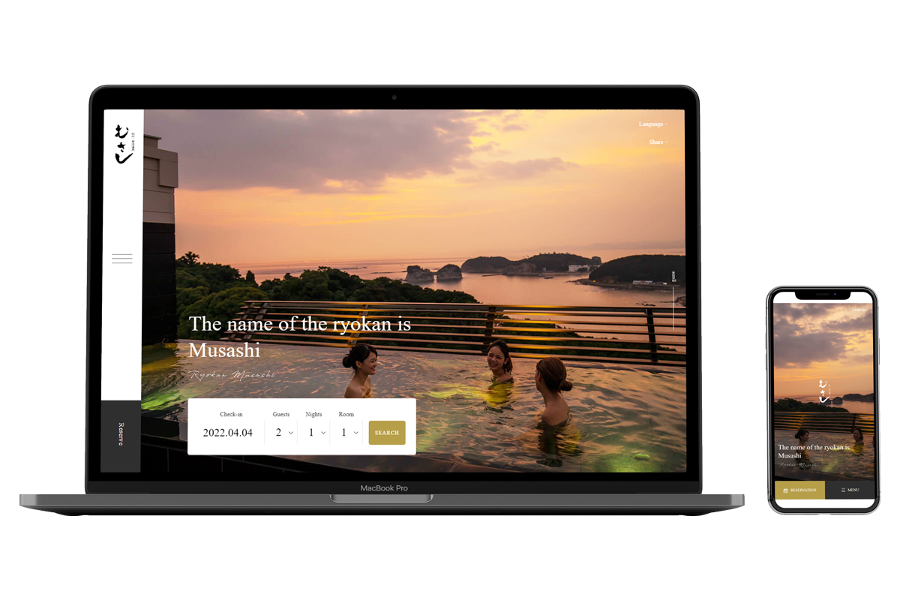
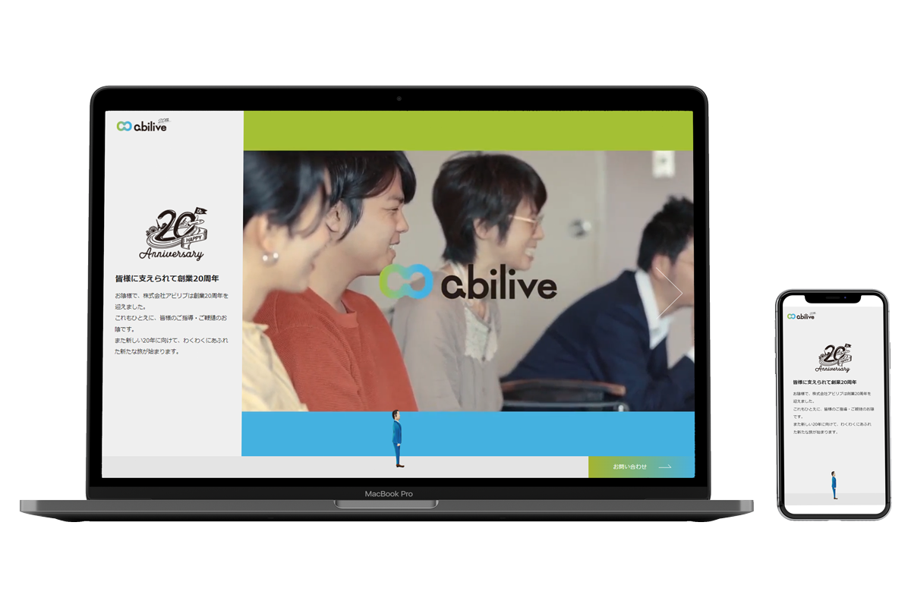

実績
Webサイトの制作・運用（通算：8年1ヶ月）
-
 旅館「紀州・白浜温泉むさし」Webサイト制作（外国語）
-
 株式会社アビリブ創業20周年特設ページ
-
訪日外国人観光客向けの旅行商品一覧ページの改善
-
衣料品店「Natty」のWebサイト制作
コーディング
- 静的サイトの制作・運用
- WordPressサイトの制作・運用
- WordPress本体のバージョンの管理
- プラグインの選定・アップデート
- テーマの作成
- ECサイトの制作・運用
- フルスクラッチのECサイトの運用
- らくうるカートのカスタマイズ
- ECサイト（Shopify）のページ制作
- 外注先（オフショアを含む）への依頼
- コーディングガイドラインの作成
- コードのレビュー・修正依頼
制作環境の整備
- マニュアルの作成
- 業務が属人化しないようにマニュアルを作成。他のメンバーのスキルを考慮して、業務が属人化しないかを判断しています。
- Gitを用いたバージョン管理環境の構築
- ホスティングサービスとして、GitHubまたはBitbucketを利用。
- ステージング環境の構築
解析レポートの作成（通算：半年）
- 脱毛サロンの解析レポートの作成
- SEO施策の効果測定
- GoogleビジネスプロフィールやLINEからの流入計測のためのパラメータ設置
- お土産店ECサイトの月次レポートの作成
- カゴ落ち率の計測
- 集客施策の効果測定